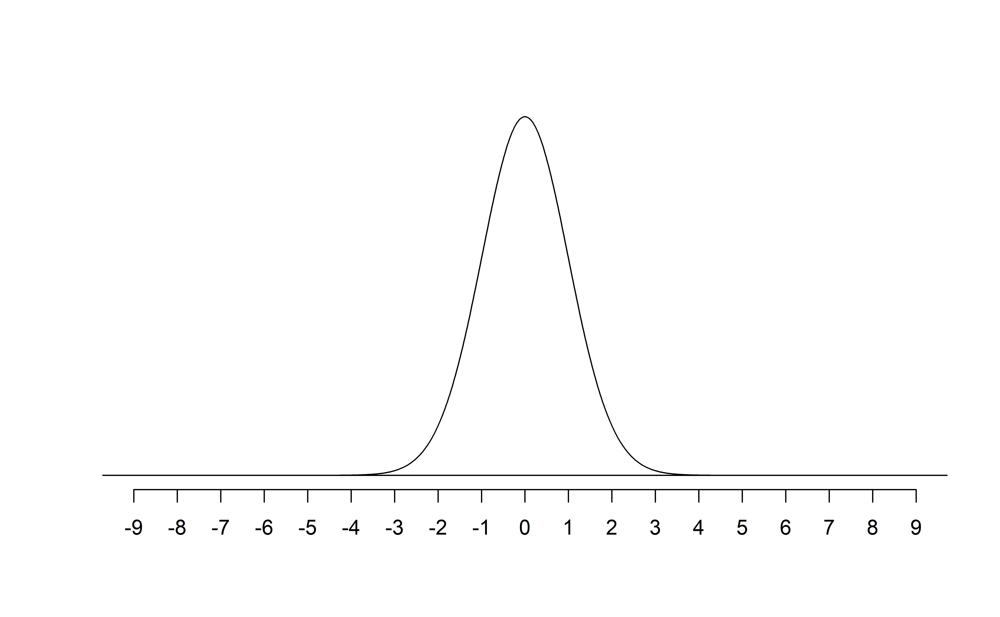
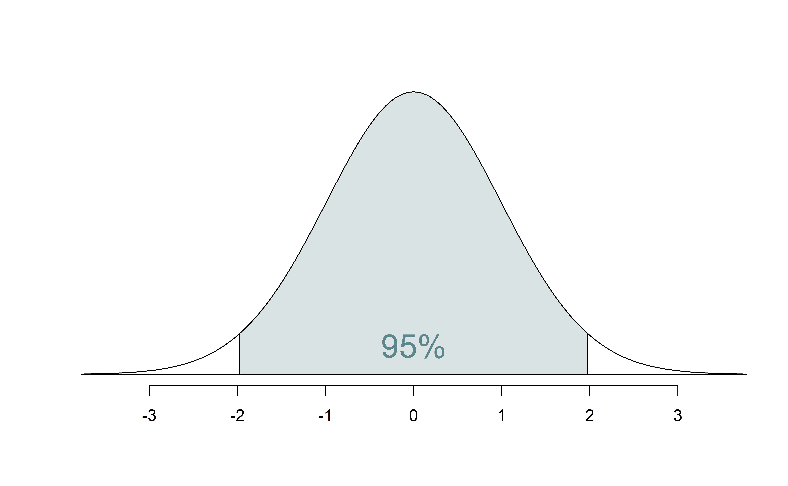
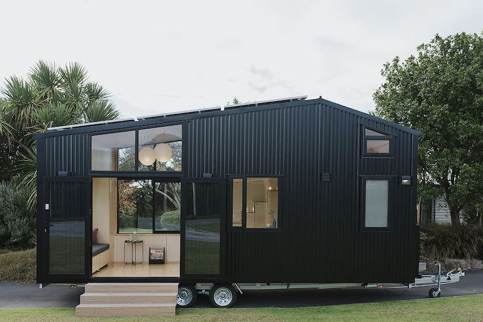

# load packages
library(tidyverse) # for data wrangling and visualization
library(tidymodels) # for modeling
library(openintro) # for the duke_forest dataset
library(scales) # for pretty axis labels
library(knitr) # for pretty tables
library(kableExtra) # also for pretty tables
library(patchwork) # arrange plots
# set default theme and larger font size for ggplot2
ggplot2::theme_set(ggplot2::theme_bw(base_size = 20))SLR: Mathematical models for inference
Announcements
HW 01: due Wed, Sep 20 at 11:59pm
- Questions?
Statistics experience - due Mon, Nov 20 at 11:59pm
Course policy reminders
-
- HW and labs accepted up to 2 days late.
- 5% deduction for each 24-hour period the assignment is late.
-
- Can use on HW and individual labs
Lowest HW and lowest lab grade dropped at the end of the semester.
Course policy reminders
-
- Opened 1 day after assignment is returned and due within 1 week
- Only submit regrade if there is an error in the grading not to dispute points
- Prof. Tackett or Sam the Head TA will regrade the entire exercise being disputed, which could result in a lower grade
TipSee the posted solutions and ask during office hours before submitting a regrade request
Statistician of the day: Regina Nuzzo
Dr. Nuzzo received her PhD in Statistics from Stanford University and is now Professor of Science, Technology, & Mathematics at Gallaudet University. Dr. Nuzzo teaches statistics using American Sign Language.
Her work has appeared in Nature, Los Angeles Times, New York Times, Reader’s Digest, New Scientist, and Scientific American. Primarily, she works to help lay-audiences understand science and statistics in particular. She earned the American Statistical Association’s 2014 Excellence in Statistical Reporting Award for her article on p-values in Nature. Her work led to the ASA’s statement on p-values.
Regina Nuzzo
From “Tips for Communicating Statistical Significance.”
“That we use p-values to alert us to surprising data results, not to give a final answer on anything. (Or at least that’s what we should be doing). And that results can get flagged as”statistically surprising” with a small p-value for a number of reasons”
There was a fluke.
Something was violated.
There was a real but tiny relationship.
There was a relationship that is worth more study.
Or any combination of the above.
Mathematical models for inference
Topics
Define mathematical models to conduct inference for the slope
Use mathematical models to
calculate confidence interval for the slope
conduct a hypothesis test for the slope
Computational setup
The regression model, revisited
df_fit <- linear_reg() |>
set_engine("lm") |>
fit(price ~ area, data = duke_forest)
tidy(df_fit) |>
kable(digits = 3)| term | estimate | std.error | statistic | p.value |
|---|---|---|---|---|
| (Intercept) | 116652.325 | 53302.463 | 2.188 | 0.031 |
| area | 159.483 | 18.171 | 8.777 | 0.000 |
Inference, revisited
- Earlier we computed a confidence interval and conducted a hypothesis test via simulation:
- CI: Bootstrap the observed sample to simulate the distribution of the slope
- HT: Permute the observed sample to simulate the distribution of the slope under the assumption that the null hypothesis is true
- Now we’ll do these based on theoretical results, i.e., by using the Central Limit Theorem to define the distribution of the slope and use features (shape, center, spread) of this distribution to compute bounds of the confidence interval and the p-value for the hypothesis test
Mathematical representation of the model
\[ \begin{aligned} Y &= Model + Error \\ &= f(X) + \epsilon \\ &= \mu_{Y|X} + \epsilon \\ &= \beta_0 + \beta_1 X + \epsilon \end{aligned} \]
where the errors are independent and normally distributed:
. . .
- independent: Knowing the error term for one observation doesn’t tell you anything about the error term for another observation
- normally distributed: \(\epsilon \sim N(0, \sigma_\epsilon^2)\)
Mathematical representation, visualized
\[ Y|X \sim N(\beta_0 + \beta_1 X, \sigma_\epsilon^2) \]

- Mean: \(\beta_0 + \beta_1 X\), the predicted value based on the regression model
- Variance: \(\sigma_\epsilon^2\), constant across the range of \(X\)
- How do we estimate \(\sigma_\epsilon^2\)?
Regression standard error
Once we fit the model, we can use the residuals to estimate the regression standard error, the average distance between the observed values and the regression line
\[ \hat{\sigma}_\epsilon = \sqrt{\frac{\sum_\limits{i=1}^n(y_i - \hat{y}_i)^2}{n-2}} = \sqrt{\frac{\sum_\limits{i=1}^ne_i^2}{n-2}} \]
. . .
Why divide by \(n - 2\)?
Why do we care about the value of the regression standard error?
Standard error of \(\hat{\beta}_1\)
The standard error of \(\hat{\beta}_1\) quantifies the sampling variability in the estimated slopes
\[ SE_{\hat{\beta}_1} = \hat{\sigma}_\epsilon\sqrt{\frac{1}{(n-1)s_X^2}} \]
. . .
| term | estimate | std.error | statistic | p.value |
|---|---|---|---|---|
| (Intercept) | 116652.33 | 53302.46 | 2.19 | 0.03 |
| area | 159.48 | 18.17 | 8.78 | 0.00 |
Mathematical models for inference for \(\beta_1\)
Hypothesis test for the slope
Hypotheses: \(H_0: \beta_1 = 0\) vs. \(H_A: \beta_1 \ne 0\)
. . .
Test statistic: Number of standard errors the estimate is away from the null
\[ T = \frac{\text{Estimate - Null}}{\text{Standard error}} \\ \]
. . .
p-value: Probability of observing a test statistic at least as extreme (in the direction of the alternative hypothesis) from the null value as the one observed
\[ p-value = P(|t| > |\text{test statistic}|), \]
calculated from a \(t\) distribution with \(n - 2\) degrees of freedom
Hypothesis test: Test statistic
| term | estimate | std.error | statistic | p.value |
|---|---|---|---|---|
| (Intercept) | 116652.33 | 53302.46 | 2.19 | 0.03 |
| area | 159.48 | 18.17 | 8.78 | 0.00 |
\[ T = \frac{\hat{\beta}_1 - 0}{SE_{\hat{\beta}_1}} = \frac{159.48 - 0}{18.17} = 8.78 \]
Select the best interpretation of the test statistic on Ed Discussion.
[10:05am lecture] [1:25pm lecture]
Hypothesis test: p-value
| term | estimate | std.error | statistic | p.value |
|---|---|---|---|---|
| (Intercept) | 116652.33 | 53302.46 | 2.19 | 0.03 |
| area | 159.48 | 18.17 | 8.78 | 0.00 |

Hypothesis test: p-value
| term | estimate | std.error | statistic | p.value |
|---|---|---|---|---|
| (Intercept) | 116652.33 | 53302.46 | 2.19 | 0.03 |
| area | 159.48 | 18.17 | 8.78 | 0.00 |
A more exact p-value
2 * pt(q = 8.78, df = 96, lower.tail = FALSE)[1] 6.19602e-14Select the meaning of the p-value on Ed Discussion.
Understanding the p-value
| Magnitude of p-value | Interpretation |
|---|---|
| p-value < 0.01 | strong evidence against \(H_0\) |
| 0.01 < p-value < 0.05 | moderate evidence against \(H_0\) |
| 0.05 < p-value < 0.1 | weak evidence against \(H_0\) |
| p-value > 0.1 | effectively no evidence against \(H_0\) |
Important
These are general guidelines. The strength of evidence depends on the context of the problem.
Hypothesis test: Conclusion, in context
| term | estimate | std.error | statistic | p.value |
|---|---|---|---|---|
| (Intercept) | 116652.33 | 53302.46 | 2.19 | 0.03 |
| area | 159.48 | 18.17 | 8.78 | 0.00 |
- The data provide convincing evidence that the population slope \(\beta_1\) is different from 0.
- The data provide convincing evidence of a linear relationship between area and price of houses in Duke Forest.
Confidence interval for the slope
\[ \text{Estimate} \pm \text{ (critical value) } \times \text{SE} \]
. . .
\[ \hat{\beta}_1 \pm t^* \times SE_{\hat{\beta}_1} \]
where \(t^*\) is calculated from a \(t\) distribution with \(n-2\) degrees of freedom
Confidence interval: Critical value
# confidence level: 95%
qt(0.975, df = nrow(duke_forest) - 2)[1] 1.984984# confidence level: 90%
qt(0.95, df = nrow(duke_forest) - 2)[1] 1.660881# confidence level: 99%
qt(0.995, df = nrow(duke_forest) - 2)[1] 2.628016
95% CI for the slope: Calculation
| term | estimate | std.error | statistic | p.value |
|---|---|---|---|---|
| (Intercept) | 116652.33 | 53302.46 | 2.19 | 0.03 |
| area | 159.48 | 18.17 | 8.78 | 0.00 |
\[\hat{\beta}_1 = 159.48 \hspace{15mm} t^* = 1.98 \hspace{15mm} SE_{\hat{\beta}_1} = 18.17\]
. . .
\[ 159.48 \pm 1.98 \times 18.17 = (123.50, 195.46) \]
95% CI for the slope: Computation
tidy(df_fit, conf.int = TRUE, conf.level = 0.95) |>
kable(digits = 2)| term | estimate | std.error | statistic | p.value | conf.low | conf.high |
|---|---|---|---|---|---|---|
| (Intercept) | 116652.33 | 53302.46 | 2.19 | 0.03 | 10847.77 | 222456.88 |
| area | 159.48 | 18.17 | 8.78 | 0.00 | 123.41 | 195.55 |
Intervals for predictions
Intervals for predictions
- Suppose we want to answer the question “What is the predicted sale price of a Duke Forest house that is 2,800 square feet?”
- We said reporting a single estimate for the slope is not wise, and we should report a plausible range instead
- Similarly, reporting a single prediction for a new value is not wise, and we should report a plausible range instead
Warning: Using `size` aesthetic for lines was deprecated in ggplot2 3.4.0.
ℹ Please use `linewidth` instead.`geom_smooth()` using formula = 'y ~ x'Warning: Removed 1 row containing non-finite outside the scale range
(`stat_smooth()`).Warning: Removed 1 row containing missing values or values outside the scale range
(`geom_point()`).
Two types of predictions
Prediction for the mean: “What is the average predicted sale price of Duke Forest houses that are 2,800 square feet?”
Prediction for an individual observation: “What is the predicted sale price of a Duke Forest house that is 2,800 square feet?”
. . .
Which would you expect to be more variable? The average prediction or the prediction for an individual observation? Based on your answer, how would you expect the widths of plausible ranges for these two predictions to compare?
Uncertainty in predictions
Confidence interval for the mean outcome: \[\large{\hat{y} \pm t_{n-2}^* \times \color{purple}{\mathbf{SE}_{\hat{\boldsymbol{\mu}}}}}\]
. . .
Prediction interval for an individual observation: \[\large{\hat{y} \pm t_{n-2}^* \times \color{purple}{\mathbf{SE_{\hat{y}}}}}\]
Standard errors
Standard error of the mean outcome: \[SE_{\hat{\mu}} = \hat{\sigma}_\epsilon\sqrt{\frac{1}{n} + \frac{(x-\bar{x})^2}{\sum\limits_{i=1}^n(x_i - \bar{x})^2}}\]
. . .
Standard error of an individual outcome: \[SE_{\hat{y}} = \hat{\sigma}_\epsilon\sqrt{1 + \frac{1}{n} + \frac{(x-\bar{x})^2}{\sum\limits_{i=1}^n(x_i - \bar{x})^2}}\]
Standard errors
Standard error of the mean outcome: \[SE_{\hat{\mu}} = \hat{\sigma}_\epsilon\sqrt{\frac{1}{n} + \frac{(x-\bar{x})^2}{\sum\limits_{i=1}^n(x_i - \bar{x})^2}}\]
Standard error of an individual outcome: \[SE_{\hat{y}} = \hat{\sigma}_\epsilon\sqrt{\mathbf{\color{purple}{\Large{1}}} + \frac{1}{n} + \frac{(x-\bar{x})^2}{\sum\limits_{i=1}^n(x_i - \bar{x})^2}}\]
Confidence interval
The 95% confidence interval for the mean outcome:
new_house <- tibble(area = 2800)
predict(df_fit, new_data = new_house, type = "conf_int", level = 0.95) |>
kable()| .pred_lower | .pred_upper |
|---|---|
| 529351 | 597060.1 |
. . .
We are 95% confident that mean sale price of Duke Forest houses that are 2,800 square feet is between $529,351 and $597,060.
Prediction interval
The 95% prediction interval for an individual outcome:
predict(df_fit, new_data = new_house, type = "pred_int", level = 0.95) |>
kable()| .pred_lower | .pred_upper |
|---|---|
| 226438.3 | 899972.7 |
. . .
We are 95% confident that predicted sale price of a Duke Forest house that is 2,800 square feet is between $226,438 and $899,973.
Comparing intervals
Warning: A numeric `legend.position` argument in `theme()` was deprecated in ggplot2
3.5.0.
ℹ Please use the `legend.position.inside` argument of `theme()` instead.`geom_smooth()` using formula = 'y ~ x'Warning: Removed 1 row containing non-finite outside the scale range
(`stat_smooth()`).Warning: Removed 1 row containing missing values or values outside the scale range
(`geom_point()`).Warning: Removed 9 rows containing missing values or values outside the scale range
(`geom_line()`).Warning: Removed 2 rows containing missing values or values outside the scale range
(`geom_line()`).
Extrapolation
Using the model to predict for values outside the range of the original data is extrapolation.
. . .
Calculate the prediction interval for the sale price of a “tiny house” in Duke Forest that is 225 square feet.

. . .
No, thanks!
Extrapolation
Why do we want to avoid extrapolation?